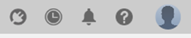
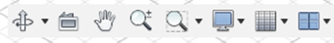
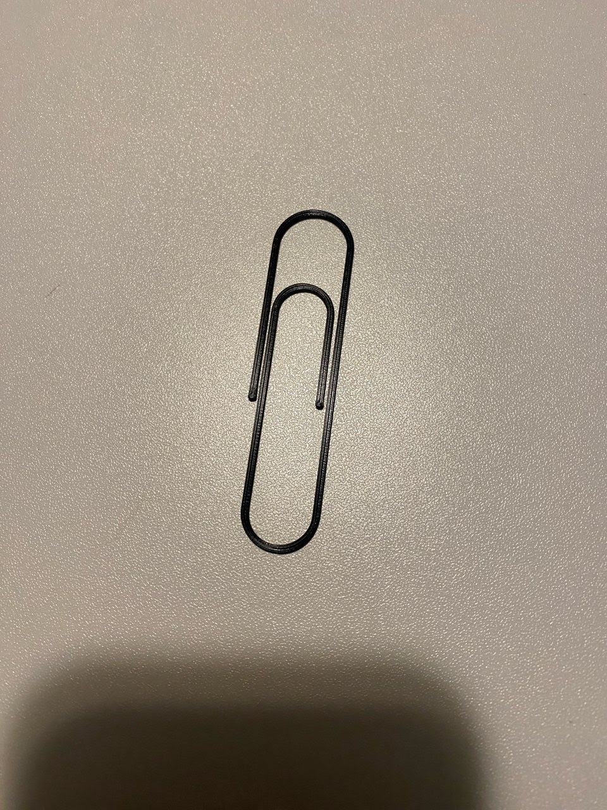

Deep Dive into Fusion 360
Self-Evaluation Beforehand
Something I struggled with in Fusion was navigating different sketches, but I was able to overcome this through practicing using the bar at the bottom.
Storage Box
Before starting working with Fusion, I was required to make a storage box. I decided to reuse a box that I already had from making it during Fab Academy. My documentation for making the box can be found here, containing a description on how I made the box.
Navigating the Fusion 360 User Interface

This is the application bar. This bar contains the data panel, file menu, save button, and undo/redo buttons. This is also where all open projects are displayed in a tabs format.

This is the data panel. The data panel functions as the file explorer for Fusion files and directories, along with managing sharing settings.

These are the Profile and Help settings. This area contains notifications, statuses, and the profile button which allows modification of preferences and profile settings.

This is the toolbar. The toolbar contains all of the tools/actions. The tools in the toolbar are organized by category: solid, surface, mesh, sheet metal, plastic, and utilities. The categories can be selected at the top bar, and the tools themselves are in the main rectangular panel.

This is the browser. The browser allows easy access and viewing of all objects within the design. The browser allows the user to change the visibility of objects and change file units. The browser is structured like a file explorer.

This is the view cube. The view cube allows orbiting around the design, and snapping to a specific viewing angle. The home button will orbit to the default home viewing position.

This is the canvas. The canvas is where all the designing takes place. Right clicking in the canvas will access the marking menu/right-click menu which allows quick access of specific tools and commands.

These are the navigation bar and display settings. The navigation bar is used to move around the design more accurately than the view cube. The display settings control cosmetic appearances.

This is the view of the canvas from multiple perspectives at once, through use of the Viewports -> Multiple Views setting.
Interface Parts List

Pro Tricks
- Utilize sketch constraints to secure specific geometry.

- Use the timeline to modify sketches that have other geometry defined on top of them.

Paperclip
My file for the paperclip design in Fusion360 can be downloaded here. The paperclip's design mainly used constraints and the sweep command. I learned how constraints can be used to ensure that geometry remains strictly vertical/horizontal/tangent and how the sweep tool uses a sweep path and selects an object to be swept.
 |
 |
Glass Bottle
My file for the glass bottle design in Fusion360 can be downloaded here.
 |
 |